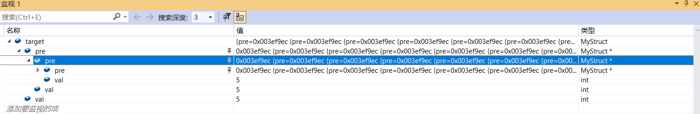
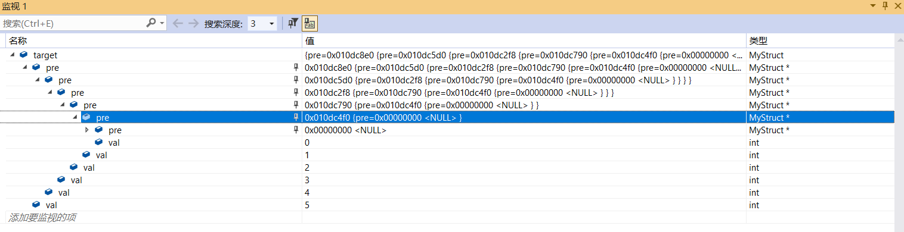

循环语句中指针赋值出错
最近在写人工智能作业的时候遇到了一点问题，就是在循环语句中对指针类型赋值出现错误，导致所有的结点的前驱指针最终指向自身。
问题描述
以下使用一个简单的示例来模拟当时出现的问题。
MyStruct 为一个自定义结构体类型，包含数据成员 val 和前驱结点 pre。首先将初始结点(0，nullptr)加入队列 Q，随后在每次循环中，用变量 fs 接收队列 Q 的队首元素并将其出队，并根据该结点生成一个新结点，该新结点 val = fs.val + 1，且将其前驱结点设为 fs 并加入到队列 Q 中。直到 fs.val >= 5 时退出循环。
1 | struct MyStruct |
如果代码运行如我们预期，最终将会得到一个 val 为 5 的结点，并且其前驱为一个 val 为 4 的结点，以此类推，形成一个 val 从 5 到 0 的链表。但事实上，最终结点之间并没有彼此相连，结点 target 的 pre 为自身。

问题原因
如果仔细观察，变量 fs 在整个循环过程中都占用同一片内存空间，而子节点的前驱结点 pre 直接指定为了 fs 的地址，那么如果 fs 的值遭到改变，即该地址的数据被改变，那么结点的前驱结点 pre 也会被改变。即下次循环执行 MyStruct fs = Q.front(); 后结点的前驱结点就遭到了改变，且指向了自身。
解放方法
由于 fs 的始终占用一片内存空间，为了防止因 fs 的数据被改变而使得结点前驱结点数据遭到改变，可以为结点的前驱结点重新开辟一片内存空间并赋予当前 fs 的数据。

本博客所有文章除特别声明外，均采用 CC BY-NC-SA 4.0 许可协议。转载请注明来源 PageFault！
 微信
微信 支付宝
支付宝
相关推荐

2021-08-31
链表连接出错
太久没接触数据结构了，导致链表这一块的内容有点生疏了，这两天在做一道链表相关的题时出现了一点问题，在此记录一下以免之后再犯。 问题描述题目链接两数相加 链表定义1234567struct ListNode { int val; ListNode *next; ListNode() : val(0), next(nullptr) {} ListNode(int x) : val(x), next(nullptr) {} ListNode(int x, ListNode *next) : val(x), next(next) {}}; 解题思路本题很常规，两链表相应位相加得到新链表对应位的值。首先要创建两个个空指针，一个作为新链表的头节点，指向两数相加结果的第一位；一个用以指向链表的子节点，并为其赋值两链表对应位的值相加的结果，最后返回头节点。 错误代码123456789101112131415161718192021222324252627282930313233...

2023-03-07
C++面试题总结
由于考研失利，最近在准备春招，想要找一份游戏客户端开发的岗位，便想要将 C++ 常见的面试题整理出来。题目来自牛客网的 C++ 面试题库，答案结合了牛客网给出的参考答案、new bing 给出的回答以及个人的理解和思考。 C++ 和 C 中 struct 的区别，以及 C++ 中 struct 和 class 的区别C++ 和 C 中 struct 的区别 C 中 struct 只能定义成员变量，不能定义成员函数，而 C++ 中 struct 可以定义成员函数，甚至构造函数，析构函数，友元等。 C 中 struct 内的成员变量不可以直接初始化，而 C++ 中可以。 C 中使用结构体需要加上 struct 关键字，或者使用 typedef 对结构体取别名后再直接使用其别名，而 C++ 使用结构体则可以直接忽略 struct 关键字。 C++ 中 struct 和 class 的区别 class 的成员默认是 private 的，而 struct 的成员默认是 public 的。 class 继承默认是 private 继承，而 struct 继承默认是 public 继承。 ...

2024-12-17
CSAPP Cache Lab
本 Lab 主要考察对计算机高速缓存（Cache）机制的理解，以及如何针对 Cache 进行程序的优化，对应知识点为书中的 6.4 ~ 6.6 节内容。 Part A: Writing a Cache Simulator思路基本流程Part A 需要实现一个 Cache 模拟器，能够根据 valgrind 工具所生成的访存跟踪数据，模拟在特定参数的 Cache 环境下的命中（hits）次数、不命中（misses）次数和置换（evictions）次数，目标是实现与 csim-ref 同等的功能。模拟器需要具备的几个功能模块如下： 对命令行参数进行参数解析。 读取 trace 文件并解析为地址访问流。 定义 Cache 模拟器数据结构，以及相关的函数操作，包括初始化和地址访问。 遍历解析出来的地址访问流，依次进行访问模拟，计算得到命中次数等信息。 接下来分别对它们进行介绍。 命令行参数解析根据实验手册的提示，可以使用 getopt 函数进行命令行参数的解析。另外，如果需要支持长选项（形如 --opt arg），则可以使用 GNU C 库提供的扩展版本 getopt_lo...

2022-01-19
使用OpenGL渲染一个立方体
本文将介绍如何使用最为常用的图形 API —— OpenGL 来渲染一个立方体，代码部分来自于《Computer Graphics Programming in OpenGL with C++》，并加入了自己的理解。 基本过程环境配置在编写程序之前，需要先配置好一些有助于程序编写的第三方库，本次实验需要用到的库有三个：用于窗口管理的 GLFW 库，扩展功能的 GLEW 库，以及用于数学运算的 GLM 库。 IDE 使用的是 Visual Studio 2019，并安装了 GLSL Language Integration 插件来实现 glsl 语言的代码高亮和自动补全。 具体的环境配置过程在此不过多赘述，本文主要聚焦于代码的实现。 窗口的创建要将渲染的图像显示出来，就需要创建一个特定的显示窗口，首先通过 glfwWindowHint() 指定 OpenGL 的版本号，再使用 glfwCreateWindow() 创建 GLFW 窗口。由于创建 GLFW 窗口并不会自动将它与当前 OpenGL 上下文关联起来，因此还需要调用 glfwMakeContextCurrent(). 为...

2024-08-31
CSAPP Data Lab
CSAPP 的第一个 Lab，对应知识点为书中的第 2 章（信息的表示与处理），要求使用受限制的运算符和表达式实现一些位操作。主要分为两个部分：整数部分和浮点数部分。其中整数部分限制较多，比较偏重技巧性，部分题个人认为很有难度。而浮点数部分则比较基础，主要考察对 IEEE 754 标准的熟悉程度，代码较长，但思路相对简单。 bitXor思路使用德-摩根定律进行推导，推导过程如下： 代码1234int bitXor(int x, int y) { // 德-摩根定律 return ~(~(x & ~y) & ~(~x & y));} tmin思路最小整数即最高位（负数权重）为 1，其余（正数权重）为 0。 代码123int tmin(void) { return 1 << 31;} isTmax思路由于不能使用左移运算符，因此没办法直接构造出 tmax，需要仔细考虑 tmax 的性质：tmax = 0x7fffffff ，而 tmax + 1 = 0x80000000 ，这两个数的二进制...

2025-01-10
CSAPP Malloc Lab
本 Lab 需要实现一个内存分配器，技巧性较强，对应知识点为书中的第 9 章的第 9.9 节。个人认为是所有 Lab 中难度最高的一个，我这里也是时间所迫，只参照教材实现了隐式空闲链表，显式空闲链表的实现尚存在一些 bug，在本文暂不介绍。 思路实验要求实现 mm_init, mm_malloc, mm_free, mm_realloc。 mm_malloc 需要返回 8 字节对齐的指针。 mm_realloc: 返回一个指向至少 size 字节的内存区域指针。 如果 ptr 为空，作用等同于 mm_malloc(size)。 如果 size 等于 0，作用等用于 mm_free(ptr)。 如果 ptr 非空，将 ptr 指向区域的大小更改为 size 字节，并返回新区域的内存地址。 隐式空闲链表首先介绍一下书中介绍的隐式空闲链表的设计，主要分为两个方面：空闲块的设计和空闲链表的组织。 空闲块的设计 一个空闲块由三部分组成：首部、载荷（可能包含填充）和尾部。头部和尾部的内容完全一致，之所以要引入这样的冗余信息，是为了实现常数时间复杂度的反向访问。因为内存载荷大小的不确定性...